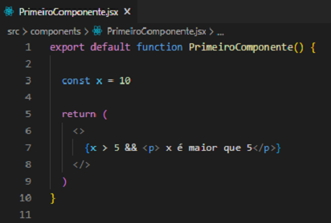
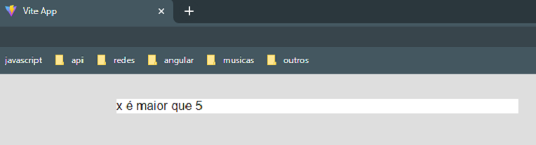
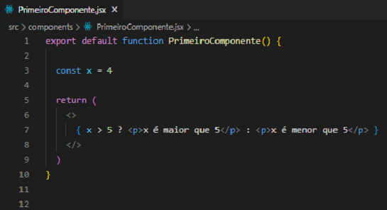
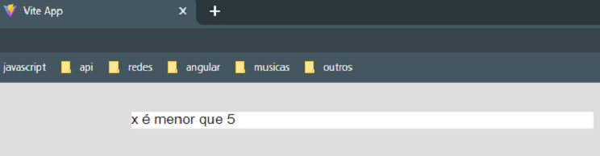

Renderização condicional em React funciona da mesma forma que condições funcionam em JavaScript.
No exemplo abaixo declaramos antes de return uma constante com o valor 10. Dentro das chaves temos a nossa condição. O && verifica se a condição é verdadeira ou falsa. Caso seja verdadeira, o que vier depois será executado. Caso a condição seja falsa, não será executado nada. É um if sem o else.

No navegador teremos:

Também temos o uso do if ternário:

No navegador teremos:
